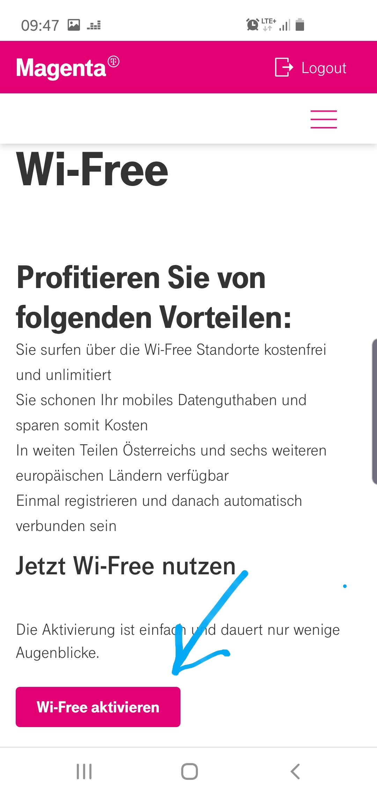
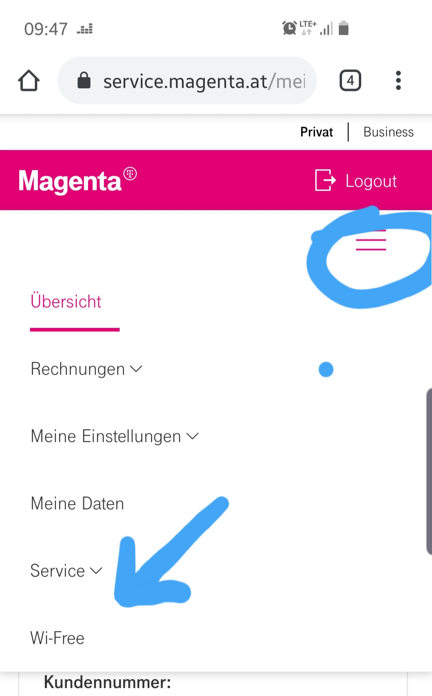

Im Brief zur Anmeldung und Emaildaten steht daß man Wi-Free deaktivieren kann, unter den Link www.magernta.com/wi-free, aber es stimmt nicht, stattdessen habe ich jetzt ein Konto, und die deaktivierung ist noch nicht erfolgt, wie immer suche ich jeden einzelnen Punkt und finde nichts darüber. Ich war schon in den Routereinstellungen und habe Wlan deaktiviert, mit Wi-Free würde ich genauso umgehen, ich brauche beides nicht, und lebe zufrieden in einem strahlungsfreieren Raum. Danke. Aber was oll schon wieder all die Fehler und Fake Bullshit um Kunden zu ***********en??? Passt auf was ihr schreibt, die wirklichkeit ist nicht Facebook! Also wie und wo deaktiviert man Wi-Free, weil im Brief steht dass ich dazu hier her kommen soll.
Mit der Threadüberschrift ist jetzt nicht leicht dein Thema zu erfassen, nehme an du willst einen Tipp und nicht Mitleid
") .
.
Das Wifi Free änderst du online, dauert nur ein bisschen bis das deaktiviert ist. Lass dem Ganzen einen Tag Zeit, war bei mir so.
Also nur im Onlinekonto einloggen (Mein Magenta Kabel) und dann hast den Reiter Wifi free, draufklicken und deaktivieren.
So schwer machen sie es einem nicht... oder?


Ich arbeite am PC und nicht am Smarthandy, und ich suche kein Mitleid sondern SERVICE und eine ENTSCHULDIGUNG, hauptsache so ****** wie Du haben einen Job. Du hast mich derb gekränkt und ***********t, aber typisch Telekom, ihr seids halt alle Arrogante monopolistsche Erpresser. Was ich mit österreichischen Provider erlebt habe, pack ich nicht, ihr behandelt eure Kunden wie Sklaven!
Bei mir gibt es diesen Punkt nicht, bei mir schauen die Menüs alle anders aus, und du solltest Screens von PC senden und nicht Smarthandy!
@graew
vorab möchte ich klar stellen, dass es sich hier um eine Community handelt, in welcher alle User Tipps geben können.
"Mitglied" sein bedeutet nicht, dass es sich um einen Mitarbeiter von Magenta handelt. "Uns" kannst du als "Moderator" erkennen.
Tut mir leid, wenn es hier zu einem Missverständnis gekommen ist und der Ton von
@hausbar
dich beleidigt hat, das war sicher nicht gewollt.
Wi-Free kannst du deaktivieren, in dem du dich in das "Mein Magenta" Portal einloggst und danach auf den im "Wi-Free" Reiter klickst.
Rechts wird dir dann angezeigt, ob dein Modem bereits für Wi-Free aktiviert ist oder nicht.
Falls ja, kannst du den entsprechenden Button "Wi-Free auf Ihrem Modem deaktivieren" klicken.
Brauchst du noch Hilfe, bitte ich dich den direkten Kontakt mit unseren Kolleginnen und Kollegen der Technikhotline unter 0676 200 7777 aufzunehmen. Im persönlichen Gespräch kann oftmals am besten geholfen werden.
Hier in der Community bieten wir nämlich keinen individuellen Support an, sondern sind rein unterstützend da.
Liebe Grüße, Karo
{kind=link}
{kind=link}